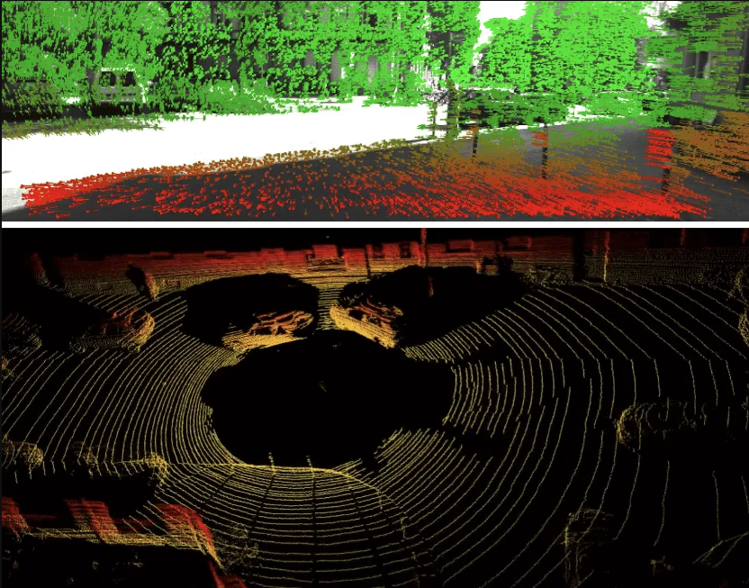
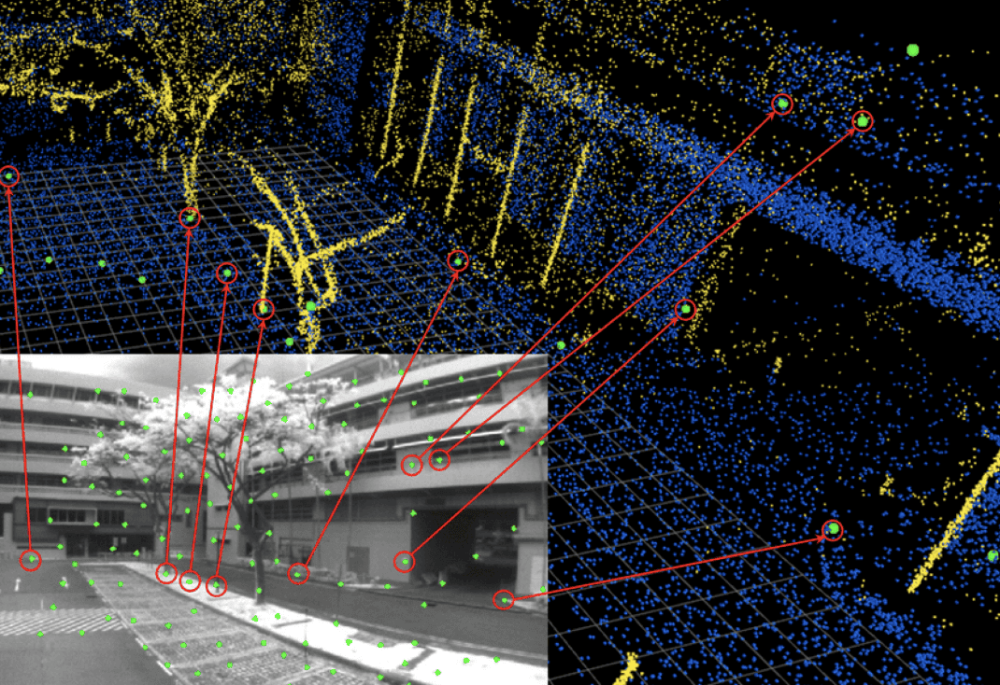

import numpy as np
import matplotlib.pyplot as plt
r = np.arange(0, 2, 0.01)
theta = 2 * np.pi * r
fig, ax = plt.subplots(
subplot_kw = {'projection': 'polar'}
)
ax.plot(theta, r)
ax.set_rticks([0.5, 1, 1.5, 2])
ax.grid(True)
plt.show()
vSLAM (Visual Simultanoeus Localization and Mapping) ermöglicht Geräten, mittels Kameras ihre Position in Echtzeit zu bestimmen und Umgebungen kartographisch abzubilden. Hauptanwendungsbereiche sind autonome mobile Roboter/ Drohnen, Augmented Reality (AR/VR), autonomes Fahren sowie Indoor-Navigation (z.B. Saugroboter).
Anwendungsbereiche im Detail:
Robotik und Drohnen: Autonome Staubsauger, Serviceroboter und Drohnen nutzen vSLAM zur Hinderniserkennung, Navigation im Raum und Erstellung von Karten unbekannter Umgebungen/ Räume.
Augmented & Virtual Reality (AR/VR): vSLAM ist essenziell für Headsets und Smartphones, um die Eigenbewegung präzise zu verfolgen und virtuelle Objekte exakt in die reale Welt einzubetten.
Autonomes Fahren: Fahzeuge nutzen visuelle Daten zur Positionsbestimmung auf der Straße und der Kartierung der Umgebung (Spurhalteassistent etc.).
Indoor-Poitionierung: Anwendung in Innenräumen oder Umgebungen ohne GPS. vSLAM ermöglicht die Navigation in Innenräumen, etwa in Logistikzentren oder für Roboter in Lagerhallen.
Der vSLAM Workflow kann zum besseren Verständnis in drei grundlegende Teile aufgebrochen werden:
Feature Extraction und visuelle Odometrie
Lokales Mapping und Optimierung
Loop Closure und globale Optimierung
Das Prinzip von vSLAM basiert auf der Verwendung von Kameras zur Positions- und Objekterkennung im Raum (nicht etwa auf Lasern, vgl. LiDAR). Die Objekterkennung erfolgt also basierend auf Bildern, aus denen geeignete Algorithmen visuelle Features wie Kanten, Ecken oder Gradienten extrahieren. Positionen im Raum von besonderer Signifikanz werden durch Punkte gekennzeichnet und ergeben über die Zeit eine detaillierte Punktewolke, die auf der realen Umgebung liegt.

TBD: inhaltliche/ technische Tiefe erweitern
Visuelle Odometrie, da vSLAM Anwendungen stets mit Bewegtbildern arbeiten. Das Verfahren berechnet dabei die Bewegung (zurückgelegte Strecke im Raum) basierend auf den visuellen Informationen. Im Workflow werden also die erkannten Features (Punkte im Raum) des Ist-Zustandes, mit einer Serie von Bildern des Pre-Zustandes abgeglichen und daraus die Positionsänderung beschrieben. Ein solches Verfahren setzt einen ständigen Abgleich momentaner Bildpunkte mit vorherigen voraus (Frame to Frame) und nennt sich ‘Feature Matching’. Nachdem die falsch gemappten Features identifiziert und abgestoßen wurden, findet die eigentliche Berechnung der Bewegung jedes einzelnen Features über die Zeit statt. Informationen über die Tiefe im aufgenommenen Bild spielt als Parameter eine wichtige Rolle und kann über Stereo-Kameras erreicht werden.
TBD: inhaltliche/ technische Tiefe erweitern

Exkurs: Alternative Ansätze zur Bewegungsbestimmung einer Kamera mittels VIO (Visual Inertial Odometry) TBD
Das lokale Mapping ist der Kern des vSLAM Workflow. Der Output der vorherigen Schritte führt jedoch zu folgender Problematik: Die erstelle Punktewolke eines Frames ist in drei, die extrahierten visuellen Features allerdings nur in zwei Dimensionen (als Pixel auf dem Bildschirm) abgebildet. Ziel des Mappings ist es nun, die 2D Features ihren korrespondierenden Positionen im Raum zuzuordnen.

TBD: Prinzip des Mappings + detaillierte Erklärung
Nach abgeschlossenem lokalem Mapping enthält der Ouput theoretisch eine lokale Mini-Map jedes einzelnen Frames, was jedoch mit signifikanter Fehlerakkumulation einhergeht und die Konsistenz der Karte gefährdet. Ziel der Optimierung ist nun die Angleichung aller lokalen Maps, um Frame-to-Frame Konsistenz zu gewährleisten. Um Beziehungen zwischen Keyframes zu bestimmen, die dieselben Feature-Punkte enthalten wird ein Konvisibilitätsgraph verwendet, wobei jeder Konten im Graphen einen Frame darstellt. Ist eine Mindestanzahl an übereinstimmenden Feature-Punkten detektiert worden, werden die beiden Frame-Knoten mit einer Kante verbunden. In einer großen Map wäre es aufgrund komplexem Rechenaufwand ineffizient, alle Kamera-Posen zu optimieren: ein Konvisibilitätsgraph ermöglicht dabei eine selektive Optimierung zur Fehlerminimierung.

TBD: Mathematisches Prinzip + visuelle Veranschaulichung
TBD
TBD: Veranschaulichung der oben erklärten Theorie: etwa Visualisierung durch Slideshow in der jeder Slide einem Step des Workflows entspricht. Ideen:
Entstehung der Punktewolke interaktiv einbetten
Mapping und Optimierungsschritte bildlich darstellen
Mappen deines Gebäudes mittels OS vSLAM Anwendungen
Vergleich von günstigen/ ungünstigen Umgebungen für die vSLAM Technologie bezogen auf Texturen, Objekte, Gradienten im Bild
Wenn wir zwei Bilder derselben Szene aus verschiedenen Winkeln haben, beschreibt die Essential Matrix \(E\) die geometrische Beziehung zwischen ihnen:
\[E = [t]_{\times} R\]
Dabei ist: * \(t\) der Translationsvektor (Bewegung). * \(R\) die Rotationsmatrix (Drehung). * \([t]_{\times}\) die schiefsymmetrische Matrix von \(t\).
Sobald wir die Matrizen kennen, können wir durch Triangulation die Tiefe \(Z\) eines Punktes berechnen.
import numpy as np
import matplotlib.pyplot as plt
r = np.arange(0, 2, 0.01)
theta = 2 * np.pi * r
fig, ax = plt.subplots(
subplot_kw = {'projection': 'polar'}
)
ax.plot(theta, r)
ax.set_rticks([0.5, 1, 1.5, 2])
ax.grid(True)
plt.show()You can include complex math like \[E = mc^2\] and immediately follow it with an interactive 3D figure to visualize your results.